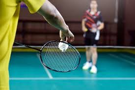

PENGERTIAN PERMAINAN BULUTANGKIS

Bulu tangkis adalah olahraga raket yang dimainkan antara dua pemain (tunggal) atau dua pasangan (ganda) dengan tujuan mengembalikan shuttlecock (kok) ke area lawan. Permainan ini berlangsung di lapangan yang dibagi oleh net, dan pemain harus menggunakan raket untuk memukul shuttlecock agar tidak jatuh ke tanah di area mereka sendiri.
Bulu tangkis merupakan olahraga yang mengutamakan kecepatan, ketepatan, dan strategi. Selain sebagai sarana kebugaran, bulu tangkis juga sangat populer di berbagai belahan dunia dan memiliki kompetisi internasional yang diakui, seperti Olimpiade dan Kejuaraan Dunia. Permainan ini tidak hanya mengandalkan kekuatan fisik, tetapi juga konsentrasi, koordinasi, dan keterampilan teknis.
Peralatan utama dalam bulu tangkis meliputi raket, yang biasanya terbuat dari bahan ringan seperti karbon, dan shuttlecock, yang dapat terbuat dari bulu angsa atau nylon. Aturan permainan mengharuskan pemain mendapatkan poin hingga 21 dengan sistem rally point, di mana setiap pukulan yang berhasil menghasilkan poin. Teknik dasar seperti servis, smash, drop shot, dan net play sangat penting untuk dikuasai, sementara strategi permainan memerlukan kemampuan membaca gerakan lawan dan mengatur posisi di lapangan.
.jpg)
Selain manfaat fisik yang meningkatkan stamina dan kekuatan otot, bulu tangkis juga berfungsi sebagai sarana sosial yang mempererat hubungan antar pemain. Kompetisi bulu tangkis berlangsung di berbagai tingkatan, mulai dari lokal hingga internasional, dengan turnamen bergengsi seperti All England dan Olimpiade menjadi ajang bagi pemain terbaik dunia untuk bersaing. Dengan semua aspek tersebut, bulu tangkis bukan hanya sekadar olahraga, tetapi juga cara efektif untuk menjaga kesehatan dan menjalin hubungan sosial.